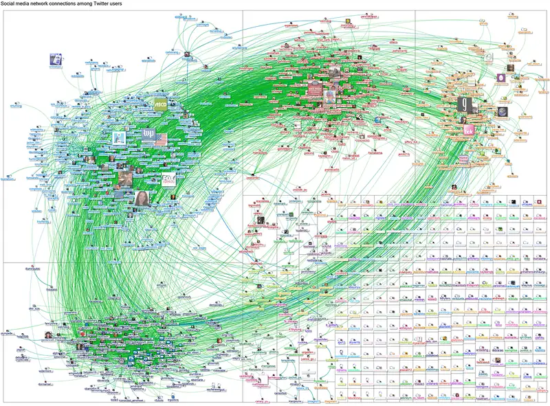

Chapter 8: Media and Technology¶
Introduction¶
When a celebrity announces that they are quitting social media, it’s big news (especially on social media). Depending on the star’s status and their reason for leaving, the decision is met with a blend of astonishment, dismay, concern for the individual or others they affect, and discussion about larger problems like bullying or online toxicity.
Why do they quit? Their reasons vary, and many eventually return. Lizzo left Twitter after claiming there were “too many trolls.” Lorde indicated that the stress of continual updates, “having front-row seats to the hellfire” necessitated a break (Kirkpatrick 2020). Other artists, like Coldplay, never formally deactivated their accounts, but went for long periods of inactivity. Rhianna took a six month hiatus; Justin Bieber and Adele also went without for some time. No matter what the reason, if a popular artist quits social media, a slew of articles and interviews will focus on the decision and the reasons behind it.
What makes these decisions newsworthy? A person deciding not to use a particular app doesn’t affect our day-to-day life. Or does it? What if that person shared intimate aspects of their life, offering a sense of connection to their followers? What if the singer provided continual updates on the progress of their new album, or gave their followers a better chance of meeting them? What if that singer posted or liked new remixes or playlists of their material, giving their fans new music to try?
Beyond the relationship with the artist, the social media presence gives fans a sense of community. Recall the discussion of groups. In traditional terms, a musician’s fanbase would be a secondary group: The group creates community, but the members aren’t close and are unlikely to serve expressive functions. But social media can easily turn that secondary group into a primary one. Follow a Reddit thread about a new video, and you’ll see dozens of people who seem to know each other well, who affirm or argue with each other along familiar lines, as if they’re cousins reuniting over a dinner table. They’ve never met in person and probably never will, but they may know intimate details about each other's lives; they’ve shared ups and downs in the manner similar to a local, close-knit group.
Selena Gomez has had a complicated relationship with social media. She has announced several times that she is quitting, and went through periods of regular downtime. She’s indicated that many of her updates are posted from friends’ devices. “As soon as I became the most followed person on Instagram,” she said, “I sort of freaked out. It had become so consuming to me. It’s what I woke up to and went to sleep to. I was an addict, and it felt like I was seeing things I didn’t want to see, like it was putting things in my head that I didn’t want to care about” (Haskell 2017).
This chapter will further explore the relationships, opportunities, and issues related to media and technology. While the specific products and platforms may quickly grow out of date, consider the larger implications of group dynamics, culture, socialization, and stratification as they relate to the ways we communicate and connect, and the old and new technologies that are meant to help us.
8.1 Technology Today¶
Learning Objectives
By the end of this section, you should be able to:
- Define technology and describe its evolution
- Explain technological inequality and issues related to unequal access to technology
- Describe the role of planned obsolescence in technological development
It is easy to look at the latest virtual reality headset and think technology is a recent addition to our world. But from the steam engine to the most cutting-edge robotic surgery tools, technology has described the application of science to address the problems of daily life. We might roll our eyes at enormous and clunky computers of the 1970s that had far less storage than a free thumb drive. But chances are, twenty years from now our skinny laptops and pocket-filling phones will look just as archaic.
What Is Technology?¶
If someone asked your instructor what instructional technology they used, your instructor would likely assume the questioner was referring to courseware platforms, classroom response offerings, or presentation software. But if your instructor simply responded with, “pencil and paper,” they’d still be accurately describing technology. Modern paper and writing devices would have been considered fantastical creations in ancient times. And the fact that they endure, even as many other potential replacements have come into play, shows how effective those technologies are.
Just as the availability of digital technology shapes how we live today, the creation of stone tools changed how premodern humans lived and how well they ate. From the first calculator, invented in 2400 BCE Babylon in the form of an abacus, to the predecessor of the modern computer, created in 1882 by Charles Babbage, all of our technological innovations are advancements on previous iterations. And indeed, all aspects of our lives are influenced by technology. In agriculture, the introduction of machines that can till, thresh, plant, and harvest greatly reduced the need for manual labor, which in turn meant there were fewer rural jobs. This led to the urbanization of society, as well as lowered birth rates because there was less need for large families to work the farms. In the criminal justice system, the ability to ascertain innocence through DNA testing has saved the lives of people on death row. The examples are endless: technology plays a role in absolutely every aspect of our lives.
Technological Inequality¶
As with any improvement to human society, not everyone has equal access. Technology, in particular, often creates changes that lead to ever greater inequalities. In short, the gap gets wider faster. This technological stratification has led to a new focus on ensuring better access for all.
There are two forms of technological stratification. The first is differential class-based access to technology in the form of the digital divide. This digital divide has led to the second form, a knowledge gap, which is, as it sounds, an ongoing and increasing gap in information for those who have less access to technology. Simply put, students in well-funded schools receive more exposure to technology than students in poorly funded schools. Those students with more exposure gain more proficiency, which makes them far more marketable in an increasingly technology-based job market and leaves our society divided into those with technological knowledge and those without. Even as we improve access, we have failed to address an increasingly evident gap in e-readiness—the ability to sort through, interpret, and process knowledge (Sciadas 2003).
Since the beginning of the millennium, social science researchers have tried to bring attention to the digital divide, the uneven access to technology among different races, classes, and geographic areas. The term became part of the common lexicon in 1996, when then Vice President Al Gore used it in a speech. This was the point when personal computer use shifted dramatically, from 300,000 users in 1991 to more than 10 million users by 1996 (Rappaport 2009). In part, the issue of the digital divide had to do with communities that received infrastructure upgrades that enabled high-speed Internet access, upgrades that largely went to affluent urban and suburban areas, leaving out large swaths of the country.
At the end of the twentieth century, technology access was also a big part of the school experience for those whose communities could afford it. Early in the millennium, poorer communities had little or no technology access, while well-off families had personal computers at home and wired classrooms in their schools. In the 2000s, however, the prices for low-end computers dropped considerably, and it appeared the digital divide was naturally ending. Research demonstrates that technology use and Internet access still vary a great deal by race, class, and age in the United States, though most studies agree that there is minimal difference in Internet use by adult men and adult women.
Data from the Pew Research Center (Perrin 2019) suggests the emergence of yet another divide. Larger percentages of groups such as Latinos and African Americans use their phones rather than traditional computers to connect to the Internet and undertake related activities. Roughly eight in ten White people reported owning computers, in contrast to roughly six in ten Black and Hispanic people owning them. White people were also more likely to have broadband (high-speed Internet) in their homes. But approximately one in four Black and Hispanic people reported being smartphone-only Internet users, a number that far outpaces White people's reliance on the devices. While it might seem that the Internet is the Internet, regardless of how you get there, there’s a notable difference. Tasks like updating a résumé or filling out a job application are much harder on a cell phone than on a large-screen computer in the home. As a result, the digital divide might mean no access to computers or the Internet, but could mean access to the kind of online technology that allows for empowerment, not just entertainment (Washington 2011).
Another aspect of the digital divide is present in the type of community one lives in. Census data released in 2018 showed that in the study period of 2013 to 2017, 78 percent of U.S. households had Internet access, but that homes in rural and low-income areas were below that national average by 13 percent. The data was collected by county, and showed that "mostly urban" counties significantly outpaced "mostly rural" counties. "Completely rural," lower-income counties had the lowest rates of home Internet adoption, at about 60 percent (Martin 2019).
One potential outcome of reduced home Internet and computer access can be the relatively low representation of certain populations in computing courses, computing majors, and computing careers. Some school districts, often with the help of government grants or corporate sponsorships, aim to address this aspect of the digital divide by providing computers to those who need them, either at a low cost or at no charge. A number of organizations, such as Code.org, Black Girls Code, and Black Boys Code, work to overcome the disparity by offering computer science education programs and camps, collaborative instruction programs with local school districts, and (perhaps most impactful in the long term) teacher training programs. As a result, the number of Black and Hispanic students in courses like Advanced Placement Computer Science has increased dramatically in recent years, as has the number of college majors from the same populations.
As a whole, the digital divide brings some level of controversy. Some question why it still exists after having been identified more than twenty years ago. Others question whether or not it exists at all, and offer data to support the claim that it does not exist (American Press Institute 2015). However, most experts agree that the COVID-19 pandemic revealed that the digital divide has persisted, particularly in education. While millions of students were confined to home and remote instruction, they were divided by their Internet access, their familiarity with computer hardware and software, and their ability to solve their own technology issues (PRB 2020). Even when governments and educational institutions implemented improvements to the access and technology situation, there remained the qualitative aspect of unplanned remote education: Many instructors and students are not as effective while communicating only through computer screens. When considering education, policymakers faced arduous decision-making processes and contentious debates as they tried the balance the issues of safety, educational quality, teacher safety, student mental health, and the overall changing landscape of the pandemic.
Constant Contact and Replaced Relationships¶
How often do you check your phone for new messages or alerts? If you're typical, it might be over 100 times a day. (The number is difficult to cite with confidence, because every few months, organizations or companies release new studies claiming to have updated statistics.) What happens to your phone when you are sleeping? In 2012, researchers reported that “44% of cell phone owners have slept with their phone next to their bed because they wanted to make sure they didn’t miss any calls, text messages, or other updates during the night, and 29% of cell owners describe their cell phone as ‘something they can’t imagine living without’” (Smith 2012). Just three years later, a frequently cited report by Bank of America indicated the number of phone-accompanied sleepers was at 71 percent (Kooser 2015). A more recent survey of 500 people found it to be 66 percent, but that survey only included adults (Abbott 2020). However, these surveys and the reaction to them might be a factor of selective memory: Prior to the rise of cell phones, many people had telephones in their rooms, often within arm's reach of their bed.
While people report that cell phones make it easier to stay in touch, simplify planning, and increase their productivity, those are not the only impacts of constant device usage in the United States. Smith also reports that “roughly one in five cell owners say that their phone has made it at least somewhat harder to forget about work at home or on the weekends; to give people their undivided attention; or to focus on a single task without being distracted” (Smith 2012). As mentioned in the opening of this chapter, even celebrities who have perhaps benefitted the most from increased communication and social media report stress and concern about their online presence and its related outcomes.
With so many people using social media both in the United States and abroad, it is no surprise that social media is a powerful force for social change or political expression. For example, McKenna Pope, a thirteen-year-old girl, used the Internet to successfully petition Hasbro to fight gender stereotypes by creating a gender-neutral Easy-Bake Oven instead of using only the traditional pink color (Kumar 2014). Movements such as MeToo and Black Lives Matter gained prominence partly through what is sometimes referred to as "hashtag activism." More recently, TikTok users who actively opposed Donald Trump's re-election registered for nearly all the seats at a major rally. When they did not attend, the arena was nearly empty, after the campaign had predicted it would be overflowing. Later, Trump supporters used the social media site Parler in their own rally planning and coordination.
Such consistent and impactful usage leads to unavoidable results: Newer communication methods are replacing older ones. Speaking by phone seems archaic and almost intrusive for some people, who greatly prefer non-voice messaging apps or texts. Media observers, etiquette commentators, and friends and family may lament people beginning and ending relationships by text message, but those methods have proven more comfortable, especially for young people.
What are the effects? There have not been studies on every type of relationship, but research into romantic relationships shows interesting results. First, consider the elements of a relationship. One is attachment, or the bond that people form with each other. Research has shown that constant communication via messaging significantly increases the level of attachment. That fact seems intuitive: people who continually check in on each other, report their whereabouts, and offer support or affirmation will build a stronger bond. The same study, however, found that the respondents rated the overall quality of the relationship as weaker or less satisfying when it was dominated by text messaging instead of voice conversation (Luo 2014).
Many of us have experienced another aspect of relationships: reliance or imbalance. Researchers have found that close friends who are heavily reliant on mobile devices and associated messaging may have more issues regarding overdependence on the relationship and differing expectations regarding communication. Friendships that do not rely on mobile devices may have far less frequent contact. Research found elements of guilt and pressure to respond (called entrapment) in mobile-dependent relationships, which led to overall dissatisfaction (Hall 2012).
Online Privacy, Security, and Control¶
As we increase our footprints on the web by going online more often to connect socially, share material, conduct business, and store information, we also increase our vulnerability to those with negative intent. Most Americans seem to accept that increased usage of online and related tools brings risks, but their perceptions of those risks are evolving. For example, people have different viewpoints on risks associated with individuals, companies, and the government. The Pew Research Center conducts frequent surveys on these topics. A recent publication indicated the following:
- 81 percent of people felt they had little control over the data collected by companies; 84 percent felt they had little control over data collected by the government.
- 62 percent felt that it was not possible to go through the day without having data collected about them by companies; 63% felt it wasn't possible to go through a day without data collection by the government.
- 79 percent were concerned about that data use by companies; 64 percent were concerned about data use by the government.
Other elements of the research demonstrate that older Americans felt more concern than younger ones, and that Black and Hispanic people were more likely than White people to believe the government was tracking them (Auxier 2019).
These attitudes may be revealed by practices or attitudes toward privacy efforts and safeguards. One person may be annoyed every time a privacy notice interrupts them, and they may simply sign the statement without thinking much about it. Another person may read every word of the agreement and carefully deliberate over whether to proceed.
Online privacy concerns also extend from individuals to their dependents. In accordance with the Child Online Privacy Protection Act, school districts must consider and control certain elements of privacy on behalf of students, meaning they cannot require or encourage students under age thirteen to provide personal information. Likewise, online platforms such as Instagram do not let children under the age of thirteen register for their sites. And where children are registered by their parents, sites like YouTube and, more recently, TikTok issue controls to prevent inappropriate portrayals by children or inappropriate behavior by other members. For example, YouTube often disables comments on videos produced by children (Moreno 2020). TikTok added privacy and protection methods in 2020, but in early 2021 was hit with allegations of violating child safety and privacy guidelines.
Although schools and companies are required to take steps to lower risks to children, parents and guardians are free to make their own choices on behalf of their children. Some parents avoid showing their children on social media; they do not post pictures, and ask family members to refrain from doing so (Levy, 2019). On the other end of the spectrum, some parents run social media accounts for their children. Sometimes referred to as "sharents," they may share entertaining videos, promote products through demos or try-ons, or post professionally produced photos on behalf of clothing companies or equipment makers. A child's (even a toddler's) role as an influencer can be financially lucrative, and companies making everything from helmets to dancewear have taken notice (Allchin 2012).
Net Neutrality¶
The issue of net neutrality, the principle that all Internet data should be treated equally by Internet service providers, is part of the national debate about Internet access and the digital divide. On one side of this debate is the belief that those who provide Internet service, like those who provide electricity and water, should be treated as common carriers, legally prohibited from discriminating based on the customer or nature of the goods. Supporters of net neutrality suggest that without such legal protections, the Internet could be divided into “fast” and “slow” lanes. A conflict perspective theorist might suggest that this discrimination would allow bigger corporations, such as Amazon, to pay Internet providers a premium for faster service, which could lead to gaining an advantage that would drive small, local competitors out of business.
The other side of the debate holds the belief that designating Internet service providers as common carriers would constitute an unreasonable regulatory burden and limit the ability of telecommunication companies to operate profitably. A functional perspective theorist might point out that, without profits, companies would not invest in making improvements to their Internet service or expanding those services to underserved areas. The final decision rests with the Federal Communications Commission and the federal government, which must decide how to fairly regulate broadband providers without dividing the Internet into haves and have-nots.
8.2 Media and Technology in Society¶
Learning Objectives
By the end of this section, you should be able to:
- Describe the evolution and current role of different media, like newspapers, television, and new media
- Describe the function of product advertising in media
- Demonstrate awareness of the social homogenization and social fragmentation that occur via modern society’s use of technology and media
Technology and the media are interwoven, and neither can be separated from contemporary society in most core and semi-peripheral nations. Media is a term that refers to all print, digital, and electronic means of communication. From the time the printing press was created (and even before), technology has influenced how and where information is shared. Today, it is impossible to discuss media and the ways societies communicate without addressing the fast-moving pace of technology change. Twenty years ago, if you wanted to share news of your baby’s birth or a job promotion, you phoned or wrote letters. You might tell a handful of people, but you probably wouldn’t call up several hundred, including your old high school chemistry teacher, to let them know. Now, you might join an online community of parents-to-be even before you announce your pregnancy via a staged Instagram picture. The circle of communication is wider than ever, and when we talk about how societies engage with technology, we must take media into account, and vice versa.
Technology creates media. The comic book you bought your daughter is a form of media, as is the movie you streamed for family night, the web site you used to order takeout, the billboard you passed on the way to pick up your food, and the newspaper you read while you were waiting for it. Without technology, media would not exist, but remember, technology is more than just the media we are exposed to.
Categorizing Technology¶
There is no one way of dividing technology into categories. Whereas once it might have been simple to classify innovations such as machine-based or drug-based or the like, the interconnected strands of technological development mean that advancement in one area might be replicated in dozens of others. For simplicity’s sake, we will look at how the U.S. Patent Office, which receives patent applications for nearly all major innovations worldwide, addresses patents. This regulatory body will patent three types of innovation. Utility patents are the first type. These are granted for the invention or discovery of any new and useful process, product, or machine, or for a significant improvement to existing technologies. The second type of patent is a design patent. Commonly conferred in architecture and industrial design, this means someone has invented a new and original design for a manufactured product. Plant patents, the final type, recognize the discovery of new plant types that can be asexually reproduced. While genetically modified food is the hot-button issue within this category, farmers have long been creating new hybrids and patenting them. A more modern example might be food giant Monsanto, which patents corn with built-in pesticide (U.S. Patent and Trademark Office 2011).
Anderson and Tushman (1990) suggest an evolutionary model of technological change, in which a breakthrough in one form of technology leads to a number of variations. Once those are assessed, a prototype emerges, and then a period of slight adjustments to the technology, interrupted by a breakthrough. For example, in terms of portable data storage, the first mainstream device was a floppy disk–a square, plastic object larger than a playing card, which in its final iteration held 1.4 megabytes of data (or less than a single high-resolution photo). Until the early 2000s, these were common formats, and students and professionals would regularly carry several of them. Floppy disks were improved and upgraded, then replaced by higher-capacity Zip and Jaz disks, which were then replaced by flash drives. This is essentially a generational model for categorizing technology, in which first-generation technology is a relatively unsophisticated jumping-off point that leads to an improved second generation, and so on.
Another type of evolution involves disruptive technology (or disruptive innovation), which is a product, service, or process that has a major effect on the operation of an entire industry, and/or may create new industries or new markets. In the example above, a disruptive technology might be the advent of cloud-based storage platforms like Google Drive and iCloud, which have significantly reduced the need for physical portable storage. Disruptive technology can create and destroy entire industries, sometimes in a rapid manner rather than in an evolutionary one. In one of the most famous examples, the advent of digital photography rendered film-based cameras obsolete; the change came quickly, and many companies could not adjust. In a similar manner, ride-sharing services have had a massive impact on the taxi and limousine industry. Emerging technologies such as blockchain, additive manufacturing (3D printing), and augmented reality are likely to have similar impacts. For example, if companies decide that it is more efficient to 3D print many products or components close to their destinations instead of shipping them from distant manufacturing plants and warehouses, the entire shipping industry may be affected.
The sociological impact of disruptive technology can be sudden. Digital photography, for example, resulted in the rapid decline of companies like Kodak, which had been stalwarts of the American economy and a major employer. Layoffs devastated cities like Rochester, New York. The advent of online music purchasing and subscription services resulted in the closure of thousands of record stores, both small businesses and large chains like Tower Records. Beyond the economic impact, these stores were often parts of the fabric of communities, places for fans to gather to explore and share music. Automation has likewise changed manufacturing and mining, resulting in severe job loss and drastic alterations in regions such as the Great Lakes, where many towns went from being part of the Manufacturing Belt to being part of the Rust Belt.
Sociology in the Real World: Violence in Media and Video Games: Does It Matter?
A glance through popular video game and movie titles geared toward children and teens shows the vast spectrum of violence that is displayed, condoned, and acted out.
As a way to guide parents in their programming choices, the motion picture industry put a rating system in place in the 1960s. But new media—video games in particular—proved to be uncharted territory. In 1994, the Entertainment Software Rating Board (ESRB) set a ratings system for games that addressed issues of violence, sexuality, drug use, and the like. California took it a step further by making it illegal to sell video games to underage buyers. The case led to a heated debate about personal freedoms and child protection, and in 2011, the U.S. Supreme Court ruled against the California law, stating it violated freedom of speech (ProCon 2012).
Children’s play has often involved games of aggression—from cops and robbers to fake sword fights. Many articles report on the controversy surrounding the suggested link between violent video games and violent behavior. Is the link real? Psychologists Anderson and Bushman (2001) reviewed forty-plus years of research on the subject and, in 2003, determined that there are causal linkages between violent video game use and aggression. They found that children who had just played a violent video game demonstrated an immediate increase in hostile or aggressive thoughts, an increase in aggressive emotions, and physiological arousal that increased the chances of acting out aggressive behavior (Anderson 2003).
However, though the American Psychological Association and other researchers found an increase in aggressive tendencies based on video game play, several studies and conclusions indicated "scant evidence" that violent video games cause either physical violence or criminal behavior. Researchers have found correlations between those behaviors, essentially indicating that violent people may be more likely to play violent video games, but that still does not mean that video games cause violence.
Types of Media and Technology¶
Media and technology have evolved hand in hand, from early print to modern publications, from radio to television to film. New media emerge constantly, such as we see in the online world.
Newspaper¶
Early forms of print media, found in ancient Rome, were hand-copied onto boards and carried around to keep the citizenry informed. With the invention of the printing press, the way that people shared ideas changed, as information could be mass produced and stored. For the first time, there was a way to spread knowledge and information more efficiently; many credit this development as leading to the Renaissance and ultimately the Age of Enlightenment. This is not to say that newspapers of old were more trustworthy than the Weekly World News and National Enquirer are today. Sensationalism abounded, as did censorship that forbade any subjects that would incite the populace.
The invention of the telegraph, in the mid-1800s, changed print media almost as much as the printing press. Suddenly information could be transmitted in minutes. As the nineteenth century became the twentieth, U.S. publishers such as Hearst redefined the world of print media and wielded an enormous amount of power to socially construct national and world events. Of course, even as the media empires of William Randolph Hearst and Joseph Pulitzer were growing, print media also allowed for the dissemination of countercultural or revolutionary materials. Internationally, Vladimir Lenin’s Iskra (The Spark) newspaper was published in 1900 and played a role in Russia’s growing communist movement (World Association of Newspapers 2004).
With the invention and widespread use of television in the mid-twentieth century, newspaper circulation steadily dropped off, and in the 21st century, circulation has dropped further as more people turn to internet news sites and other forms of new media to stay informed. According to the Pew Research Center, 2009 saw an unprecedented drop in newspaper circulation––down 10.6 percent from the year before (Pew 2010).
This shift away from newspapers as a source of information has profound effects on societies. When the news is given to a large diverse conglomerate of people, it must maintain some level of broad-based reporting and balance in order to appeal to a broad audience and keep them subscribing. As newspapers decline, news sources become more fractured, so each segment of the audience can choose specifically what it wants to hear and what it wants to avoid. Increasingly, newspapers are shifting online in an attempt to remain relevant. It is hard to tell what impact new media platforms will have on the way we receive and process information.
It is hard to tell what impact new media platforms will have on the way we receive and process information. The Pew Research Center’s Project for Excellence in Journalism (2013) reported that audiences for all the major news magazines declined in 2012, though digital ad revenue increased. The same report suggested that, while newspaper circulation is holding steady at around $10 billion after years of decline, it is digital pay plans that allow newspapers to keep their heads above water, and the digital ad revenue that is increasing for news magazines is not enough to compensate for print revenue loss in newspapers.
A 2014 report suggested that U.S. adults read a median of five books per year in 2013, which is about average. But are they reading traditional print or e-books? About 69 percent of people said they had read at least one printed book in the past year, versus 28 percent who said they’d read an e-book (DeSilver 2014). Is print more effective at conveying information? In recent study, Mangen, Walgermo, and Bronnick (2013) found that students who read on paper performed slightly better than those who read an e-book on an open-book reading comprehension exam of multiple-choice and short-answer questions. While a meta-analysis of research by Andrews (1992) seemed to confirm that people read more slowly and comprehend less when reading from screens, a meta-analysis of more recent research on this topic does not show anything definite (Noyes and Garland 2008).
Television and Radio¶
Radio programming obviously preceded television, but both shaped people’s lives in much the same way. In both cases, information (and entertainment) could be enjoyed at home, with a kind of immediacy and community that newspapers could not offer. For instance, many people in the United States might remember when they saw on television or heard on the radio that the Twin Towers in New York City had been attacked in 2001. Even though people were in their own homes, media allowed them to share these moments in real time. This same kind of separate-but-communal approach occurred with entertainment too. School-aged children and office workers gathered to discuss the previous night’s installment of a serial television or radio show.
Right up through the 1970s, U.S. television was dominated by three major networks (ABC, CBS, and NBC) that competed for ratings and advertising dollars. The networks also exerted a lot of control over what people watched. Public television, in contrast, offered an educational nonprofit alternative to the sensationalization of news spurred by the network competition for viewers and advertising dollars. Those sources—PBS (Public Broadcasting Service), the BBC (British Broadcasting Company), and CBC (Canadian Broadcasting Company)—garnered a worldwide reputation for high-quality programming and a global perspective. Al Jazeera, the Arabic independent news station, has joined this group as a similar media force that broadcasts to people worldwide.
The impact of television on U.S. society is hard to overstate. By the late 1990s, 98 percent of U.S. homes had at least one television set, and the average person watched between two and a half and five hours of television daily. All this television has a powerful socializing effect, providing reference groups while reinforcing social norms, values, and beliefs.
Film¶
The film industry took off in the 1930s, when color and sound were first integrated into feature films. Like television, early films were unifying for society: as people gathered in theaters to watch new releases, they would laugh, cry, and be scared together. Movies also act as time capsules or cultural touchstones for society. From Westerns starring the tough-talking Clint Eastwood to the biopic of Facebook founder and Harvard dropout Mark Zuckerberg, movies illustrate society’s dreams, fears, and experiences. While many consider Hollywood the epicenter of moviemaking, India’s Bollywood actually produces more films per year, speaking to the cultural aspirations and norms of Indian society. The film industry, like other media formats, has gone through substantial change as a result of streaming services, online privacy, and the new competition for people's entertainment dollars. Because the mainstream movie industry has been so reliant on ticket sales at live theaters, the COVID-19 pandemic affected it more dramatically than most other media categories. Highly anticipated movies slated for 2020 and 2021 releases were delayed or shifted to streaming distribution, reducing revenue. And some companies made lasting decisions regarding their future offerings.
New Media and Online Environments¶
New media encompasses all interactive forms of information exchange. These include social networking sites, blogs, podcasts, wikis, and virtual worlds. Many are not "new" in the sense that they were developed in the past few years (some may be older than you), but they are newer than the media mentioned above, and they rely on types of technologies that were not available until about thirty years ago. Many are ways disruptive to traditional media or to companies that rely on those other formats. Clearly, the list of new media grows almost daily, and you might feel we are missing some. In fact, the immediacy of new media coupled with the lack of oversight means we must be more careful than ever to ensure that we are making good decisions about the accuracy, ethics, and cultural responsiveness of these formats.
Sociology in the Real World: Planned Obsolescence: Technology That’s Built to Crash
Chances are your mobile phone company, as well as the makers of your laptop and your household appliances, are all counting on their products to fail. Not too quickly, of course, or consumers wouldn't stand for it—but frequently enough that you might find that it costs far more to fix a device than to replace it with a newer model. Or you find the phone company e-mails you saying that you’re eligible for a free new phone, because yours is a whopping two years old. And appliance repair people say that while they might be fixing some machines that are twenty years old, they generally aren’t fixing those that are seven years old; newer models are built to be thrown out. This strategy is called planned obsolescence, and it is the business practice of planning for a product to be obsolete or unusable from the time it is created.
To some extent, planned obsolescence is a natural extension of new and emerging technologies. After all, who is going to cling to an enormous and slow desktop computer from 2000 when a few hundred dollars can buy one that is significantly faster and better? But the practice is not always so benign. The classic example of planned obsolescence is the nylon stocking. Women’s stockings—once an everyday staple of women’s lives––get “runs” or “ladders” after only a few wearings. This requires the stockings to be discarded and new ones purchased. Not surprisingly, the garment industry did not invest heavily in finding a rip-proof fabric; it was in manufacturers' best interest that their product be regularly replaced.
Those who use Microsoft Windows might feel that like the women who purchased endless pairs of stockings, they are victims of planned obsolescence. Every time Windows releases a new operating system, there are typically not many innovations in it that consumers feel they must have. However, the software programs are upwardly compatible only. This means that while the new versions can read older files, the old version cannot read the newer ones. In short order, those who have not upgraded right away find themselves unable to open files sent by colleagues or friends, and they usually wind up upgrading as well.
Planned obsolescence is not always done ethically, and some companies can dictate the obsolescence after the user makes a purchase. Apple users took to social media to confirm that their older iPhones suddenly began losing power or were slowing down considerably. Many users bought new phones at high prices, and later learned that the slow downs were intended by the phone maker. Customers filed dozens of class action lawsuits, which are suits where a very large group of people can band together. Apple was found to have intentionally and improperly altered its phones through a software update in order to hide battery problems. While it never admitted guilt, Apple's $500 million settlement paid benefits to iPhone 6 and iPhone 7 users who had been affected, and a later $113 agreement with state attorneys general included provisions to behave more ethically and transparently (CNBC 2020).
Product Advertising and the Attention Economy¶
Companies use advertising to sell to us, but the way they reach us is changing. Naomi Klein identified the destructive impact of corporate branding her 1999 text, No Logo, an antiglobalization treatise that focused on sweatshops, corporate power, and anticonsumerist social movements. In the post-millennial society, synergistic advertising practices ensure you are receiving the same message from a variety of sources and on a variety of platforms. For example, you may see billboards for Miller beer on your way to a stadium, sit down to watch a game preceded by a Miller commercial on the big screen, and watch a halftime ad in which people are shown holding up the trademark bottles. Chances are you can guess which brand of beer is for sale at the concession stand.
Advertising has changed, as technology and media have allowed consumers to bypass traditional advertising venues. From the invention of the remote control, which allows us to skip television advertising without leaving our seats, to recording devices that let us watch programs but skip the ads, conventional television advertising is on the wane. And print media is no different. Advertising revenue in newspapers and on television has fallen significantly, which shows that companies need new ways of getting their messages to consumers.
Brand ambassadorships can also be powerful tools for advertisers. For example, companies hire college students to be their on-campus representatives, and they may target for students engaged in high-profile activities like sports, fraternities, and music. (This practice is slightly different from sponsorships, and note that some students, particularly athletes, need to follow strict guidelines about accepting money or products.) The marketing team is betting that if we buy perfume because Beyoncé tells us to, we’ll also choose our workout gear, clothing, or make-up brand if another student encourages that choice. Tens of thousands of brand ambassadors or brand evangelists work on college campuses, and such marketing approaches are seen as highly effective investments for companies. The numbers make it clear: Ambassador-referred customers provide sixteen percent higher value to companies than other customers, and over ninety percent of people indicate that people trust referrals from people they know (On-Campus Advertising, 2017).
Social media has made such influencer and ambassador marketing a near constant. Some formal ambassadors are sponsored by companies to show or use their products. In some cases, compensation arrives only in the form of the free products and whatever monetization the ambassador receives from the site, such as YouTube. Influencers are usually less formally engaged with companies than are ambassadors, relying mostly on site revenue to reward their efforts. Some influencers may overstate their popularity in order to get free products or services. For example, luxury hotels report that they are barraged by influencers (some with very few followers, and therefore questionable influence) who expect free stays in exchange for creating posts promoting the location (Locker 2019).
One ethical and perhaps relationship-oriented question is whether paid ambassadors should be required to disclose their relationship with a company, and how that works in online versus face-to-face interactions. In this case, online presence may be more "truthful" than in-person relationships. A video can formally include sponsorship information, and some ambassadors list partners or sponsors on their profiles. But in day-to-day, in-person conversations, it might be awkward for a classmate or colleague to mention that they are wearing a particular brand or using gear based on a financial relationship. In other words, the person sitting next to you with the great bag may be paid to carry it, and you may never know.
Homogenization and Fragmentation¶
Despite the variety of media at hand, the mainstream news and entertainment you enjoy are increasingly homogenized. Research by McManus (1995) suggests that different news outlets all tell the same stories, using the same sources, resulting in the same message, presented with only slight variations. So whether you are reading the New York Times or the CNN’s web site, the coverage of national events like a major court case or political issue will likely be the same.
Simultaneously with this homogenization among the major news outlets, the opposite process is occurring in the newer media streams. With so many choices, people increasingly customize their news experience, minimizing their opportunity to encounter information that does not jive with their worldview (Prior 2005). For instance, those who are staunchly Republican can avoid centrist or liberal-leaning cable news shows and web sites that would show Democrats in a favorable light. They know to seek out Fox News over MSNBC, just as Democrats know to do the opposite. Further, people who want to avoid politics completely can choose to visit web sites that deal only with entertainment or that will keep them up to date on sports scores. They have an easy way to avoid information they do not wish to hear. Americans seem to view this phenomenon with great concern, indicating that the impact of customized or personalized news delivers worse news. Yet, they still engage with the platforms that deliver news in that manner.
The fragmentation of the news has led to an increased amount of digital tribalism. Tribalism in this sense is the state or tendency to gather and reinforce ideas belonging to a group, and to do so out of a sense of strong loyalty. Digital tribalism, then, is the tendency to do so online, and also to forge new tribes purely based on online personas or ideologies. Instead of basing these groups on the classic bonds of ethnic, religious, or geographic ideologies, they are based on politics, emotions, lifestyles or lifestyle goals, or even brands (Taute & Sierra 2014). Digital tribes can lead people to a greater sense of belonging, and can also be heavily exploited for commercial or power-attaining interests.
8.3 Global Implications of Media and Technology¶
Learning Objectives
By the end of this section, you should be able to:
- Explain the advantages and concerns of media globalization
- Explain the globalization of technology

Technology, and increasingly media, has always driven globalization. In a landmark book, Thomas Friedman (2005), identified several ways in which technology “flattened” the globe and contributed to our global economy. The first edition of The World Is Flat, written in 2005, posits that core economic concepts were changed by personal computing and high-speed Internet. Access to these two technological shifts has allowed core-nation corporations to recruit workers in call centers located in China or India. Using examples like a Midwestern U.S. woman who runs a business from her home via the call centers of Bangalore, India, Friedman warns that this new world order will exist whether core-nation businesses are ready or not, and that in order to keep its key economic role in the world, the United States will need to pay attention to how it prepares workers of the twenty-first century for this dynamic.
Of course not everyone agrees with Friedman’s theory. Many economists pointed out that in reality innovation, economic activity, and population still gather in geographically attractive areas, and they continue to create economic peaks and valleys, which are by no means flattened out to mean equality for all. China’s hugely innovative and powerful cities of Shanghai and Beijing are worlds away from the rural squalor of the country’s poorest denizens.
It is worth noting that Friedman is an economist, not a sociologist. His work focuses on the economic gains and risks this new world order entails. In this section, we will look more closely at how media globalization and technological globalization play out in a sociological perspective. As the names suggest, media globalization is the worldwide integration of media through the cross-cultural exchange of ideas, while technological globalization refers to the cross-cultural development and exchange of technology.
Media Globalization¶
Lyons (2005) suggests that multinational corporations are the primary vehicle of media globalization, and these corporations control global mass-media content and distribution (Compaine 2005). It is true, when looking at who controls which media outlets, that there are fewer independent news sources as larger and larger conglomerates develop. In the early 2000s, the United States offered about 1,500 newspapers, 2,800 book publishers, plus 6,000 magazines and a whopping 10,000 radio outlets (Bagdikian 2004). By 2019, some of those numbers had changed: There were only 1,000 newspapers, but over 7,000 magazines (note that both newspapers and magazines count as such even if they publish largely online) (BBC 2019). The number of book publishers and radio outlets has generally remained static, which may seem surprising.
On the surface, there is endless opportunity to find diverse media outlets. But the numbers are misleading. Media consolidation is a process in which fewer and fewer owners control the majority of media outlets. This creates an oligopoly in which a few firms dominate the media marketplace. In 1983, a mere 50 corporations owned the bulk of mass-media outlets. Today in the United States just five companies control 90 percent of media outlets (McChesney 1999). Ranked by 2014 company revenue, Comcast is the biggest, followed by the Disney Corporation, Time Warner, CBS, and Viacom (Time.com 2014). What impact does this consolidation have on the type of information to which the U.S. public is exposed? Does media consolidation deprive the public of multiple viewpoints and limit its discourse to the information and opinions shared by a few sources? Why does it matter?
Monopolies matter because less competition typically means consumers are less well served since dissenting opinions or diverse viewpoints are less likely to be found. Media consolidation results in the following dysfunctions. First, consolidated media owes more to its stockholders than to the public. Publicly traded Fortune 500 companies must pay more attention to their profitability and to government regulators than to the public's right to know. The few companies that control most of the media, because they are owned by the power elite, represent the political and social interests of only a small minority. In an oligopoly there are fewer incentives to innovate, improve services, or decrease prices.
While some social scientists predicted that the increase in media forms would create a global village (McLuhan 1964), current research suggests that the public sphere accessing the global village will tend to be rich, Caucasoid, and English-speaking (Jan 2009). As shown by the spring 2011 uprisings throughout the Arab world, technology really does offer a window into the news of the world. For example, here in the United States we saw internet updates of Egyptian events in real time, with people tweeting, posting, and blogging on the ground in Tahrir Square.
Still, there is no question that the exchange of technology from core nations to peripheral and semi-peripheral ones leads to a number of complex issues. For instance, someone using a conflict theorist approach might focus on how much political ideology and cultural colonialism occurs with technological growth. In theory at least, technological innovations are ideology-free; a fiber optic cable is the same in a Muslim country as a secular one, a communist country or a capitalist one. But those who bring technology to less-developed nations—whether they are nongovernment organizations, businesses, or governments—usually have an agenda. A functionalist, in contrast, might focus on the ways technology creates new means to share information about successful crop-growing programs, or on the economic benefits of opening a new market for cell phone use. Either way, cultural and societal assumptions and norms are being delivered along with those high-speed wires.
Cultural and ideological bias are not the only risks of media globalization. In addition to the risk of cultural imperialism and the loss of local culture, other problems come with the benefits of a more interconnected globe. One risk is the potential for censoring by national governments that let in only the information and media they feel serve their message, as is occurring in China. In addition, core nations such as the United States risk the use of international media by criminals to circumvent local laws against socially deviant and dangerous behaviors such as gambling, child pornography, and the sex trade. Offshore or international web sites allow U.S. citizens (and others) to seek out whatever illegal or illicit information they want, from twenty-four hour online gambling sites that do not require proof of age, to sites that sell child pornography. These examples illustrate the societal risks of unfettered information flow.
Big Picture: Authority and the Internet: An Uncomfortable Friendship
In the United States, the Internet is used to access illegal gambling and pornography sites, as well as to research stocks, crowd-source what car to buy, or keep in touch with childhood friends. Can we allow one or more of those activities, while restricting the rest? And who decides what needs restricting? In a country with democratic principles and an underlying belief in free-market capitalism, the answer is decided in the court system. But globally, the questions––and the governments' responses––are very different.
Other countries take a far more restrictive and directive approach to Internet regulation. China, which is a country with a tight rein on the dissemination of information, has long worked to suppress what it calls “harmful information,” including dissent concerning government politics, dialogue about China’s relationship with Hong Kong, or criticism of the government’s handling of events.
With sites like Twitter, Facebook, and YouTube blocked in China, the nation’s Internet users turn to local media companies for their needs. Even so, the country exerts strong control by identifying and prosecuting some violators of the bans, and undertaking more far-reaching tactics.
The nation blocks the use of certain terms, such as “human rights,” and passes new laws that require people to register with their real names and make it more dangerous to criticize government actions.
In early 2021, Myanmar's military launched a coup against its government. Elected leader Ang San Suu Kyi was arrested, and other top officials were detained or pushed from power. (Suu Kyi had previously spent years under house arrest.) Immediately, citizens launched widespread and persistent protests against the coup. Myanmar's military took immediate steps to quell the protests, including firing at and killing dozens of protesters and storming colleges and hospitals. But first, the government banned Twitter, Instagram, Facebook, and WhatsApp in an effort to reduce coordination among protesters and restrain news about the crackdown. The government also arrested reporters, including foreign nationals, who were accused of violating a public order law. Social media companies replied in what ways they could, such as deactivating the accounts of Myanmar's military so that they couldn't share their own messages.
Technological Globalization¶
Technological globalization is speeded in large part by technological diffusion, the spread of technology across borders. In the last two decades, there has been rapid improvement in the spread of technology to peripheral and semi-peripheral nations, and a 2008 World Bank report discusses both the benefits and ongoing challenges of this diffusion. In general, the report found that technological progress and economic growth rates were linked, and that the rise in technological progress has helped improve the situations of many living in absolute poverty (World Bank 2008). The report recognizes that rural and low-tech products such as corn can benefit from new technological innovations, and that, conversely, technologies like mobile banking can aid those whose rural existence consists of low-tech market vending. In addition, technological advances in areas like mobile phones can lead to competition, lowered prices, and concurrent improvements in related areas such as mobile banking and information sharing.
However, the same patterns of social inequality that create a digital divide in the United States also create digital divides within peripheral and semi-peripheral nations. While the growth of technology use among countries has increased dramatically over the past several decades, the spread of technology within countries is significantly slower among peripheral and semi-peripheral nations. In these countries, far fewer people have the training and skills to take advantage of new technology, let alone access it. Technological access tends to be clustered around urban areas and leaves out vast swaths of peripheral-nation citizens. While the diffusion of information technologies has the potential to resolve many global social problems, it is often the population most in need that is most affected by the digital divide. For example, technology to purify water could save many lives, but the villages in peripheral nations most in need of water purification don’t have access to the technology, the funds to purchase it, or the technological comfort level to introduce it as a solution.
Sociology in the Real World: The Mighty Cell Phone: How Mobile Phones Are Impacting Sub-Saharan Africa
Many of Africa’s poorest countries suffer from a marked lack of infrastructure including poor roads, limited electricity, and minimal access to education and telephones. But while landline use has not changed appreciably during the past ten years, there’s been a fivefold increase in mobile phone access; more than a third of people in Sub-Saharan Africa have the ability to access a mobile phone (Katine 2010). Even more can use a “village phone”—through a shared-phone program created by the Grameen Foundation. With access to mobile phone technology, a host of benefits become available that have the potential to change the dynamics in these poorest nations. Sometimes that change is as simple as being able to make a phone call to neighboring market towns. By finding out which markets have vendors interested in their goods, fishers and farmers can ensure they travel to the market that will serve them best and avoid a wasted trip. Others can use mobile phones and some of the emerging money-sending systems to securely send money to a family member or business partner elsewhere (Katine 2010).
These shared-phone programs are often funded by businesses like Germany’s Vodafone or Britain’s Masbabi, which hope to gain market share in the region. Phone giant Nokia points out that there are 4 billion mobile phone users worldwide—that’s more than twice as many people as have bank accounts—meaning there is ripe opportunity to connect banking companies with people who need their services (ITU Telecom 2009). Not all access is corporate-based, however. Other programs are funded by business organizations that seek to help peripheral nations with tools for innovation and entrepreneurship.
But this wave of innovation and potential business comes with costs. There is, certainly, the risk of cultural imperialism, and the assumption that core nations (and core-nation multinationals) know what is best for those struggling in the world’s poorest communities. Whether well intentioned or not, the vision of a continent of Africans successfully chatting on their iPhone may not be ideal. Like all aspects of global inequity, access to technology in Africa requires more than just foreign investment. There must be a concerted effort to ensure the benefits of technology get to where they are needed most.
8.4 Theoretical Perspectives on Media and Technology¶
Learning Objectives
By the end of this section, you should be able to:
- Discuss how we analyze media and technology through various sociological perspectives
It is difficult to conceive of any one theory or theoretical perspective that can explain the variety of ways in which people interact with technology and the media. Technology runs the gamut from the match you strike to light a candle all the way up to sophisticated nuclear power plants that might power the factory where that candle was made. Media could refer to the television you watch, the ads wrapping the bus you take to work or school, or the magazines you flip through in a dentist's waiting room, not to mention all the forms of new media, including Instagram, Facebook, blogs, YouTube, and the like. Are media and technology critical to the forward march of humanity? Are they pernicious capitalist tools that lead to the exploitation of workers worldwide? Are they the magic bullet the world has been waiting for to level the playing field and raise the world’s poor out of extreme poverty? Choose any opinion and you will find studies and scholars who agree with you––and those who disagree.
Functionalism¶
Because functionalism focuses on how media and technology contribute to the smooth functioning of society, a good place to begin understanding this perspective is to write a list of functions you perceive media and technology to perform. Your list might include the ability to find information on the Internet, television’s entertainment value, or how advertising and product placement contribute to social norms.
Commercial Function¶
As you might guess, with nearly every U.S. household possessing a television, and the 250 billion hours of television watched annually by people in the United States, companies that wish to connect with consumers find television an irresistible platform to promote their goods and services (Nielsen 2012). Television advertising is a highly functional way to meet a market demographic where it lives. Sponsors can use the sophisticated data gathered by network and cable television companies regarding their viewers and target their advertising accordingly. Whether you are watching cartoons on Nick Jr. or a cooking show on Telemundo, chances are advertisers have a plan to reach you.
And it certainly doesn’t stop with television. Commercial advertising precedes movies in theaters and shows up on and inside public transportation, as well as on the sides of building and roadways. Major corporations such as Coca-Cola bring their advertising into public schools, by sponsoring sports fields or tournaments, as well as filling the halls and cafeterias of those schools with vending machines hawking their goods. With rising concerns about childhood obesity and attendant diseases, the era of soda machines in schools may be numbered. In fact, as part of the United States Department of Agriculture's Healthy, Hunger Free Kids Act and Michelle Obama's Let's Move! Initiative, a ban on junk food in school began in July 2014.
Entertainment Function¶
An obvious manifest function of media is its entertainment value. Most people, when asked why they watch television or go to the movies, would answer that they enjoy it. And the numbers certainly illustrate that. While 2012 Nielsen research shows a slight reduction of U.S. homes with televisions, the reach of television is still vast. And the amount of time spent watching is equally large. Clearly, enjoyment is paramount. On the technology side, as well, there is a clear entertainment factor to the use of new innovations. From online gaming to chatting with friends on Facebook, technology offers new and more exciting ways for people to entertain themselves.
Social Norm Functions¶
Even while the media is selling us goods and entertaining us, it also serves to socialize us, helping us pass along norms, values, and beliefs to the next generation. In fact, we are socialized and resocialized by media throughout our whole lives. All forms of media teach us what is good and desirable, how we should speak, how we should behave, and how we should react to events. Media also provide us with cultural touchstones during events of national significance. How many of your older relatives can recall watching the explosion of the space shuttle Challenger on television? How many of those reading this textbook followed the events of September 11 or Hurricane Katrina on television or the Internet?
Just as in Anderson and Bushman's (2011) evidence in the Violence in Media and Video Games: Does It Matter? feature, debate still exists over the extent and impact of media socialization. One recent study (Krahe et al. 2011) demonstrated that violent media content does have a desensitizing affect and is correlated with aggressive thoughts. Another group of scholars (Gentile, Mathieson, and Crick 2011) found that among children exposure to media violence led to an increase in both physical and relational aggression. Yet, a meta-analysis study covering four decades of research (Savage 2003) could not establish a definitive link between viewing violence and committing criminal violence.
It is clear from watching people emulate the styles of dress and talk that appear in media that media has a socializing influence. What is not clear, despite nearly fifty years of empirical research, is how much socializing influence the media has when compared to other agents of socialization, which include any social institution that passes along norms, values, and beliefs (such as peers, family, religious institutions, and the like).
Life-Changing Functions¶
Like media, many forms of technology do indeed entertain us, provide a venue for commercialization, and socialize us. For example, some studies suggest the rising obesity rate is correlated with the decrease in physical activity caused by an increase in use of some forms of technology, a latent function of the prevalence of media in society (Kautiainen et al. 2011). Without a doubt, a manifest function of technology is to change our lives, sometimes for the better and sometimes for the worse. Think of how the digital age has improved the ways we communicate. Have you ever used Skype or another webcast to talk to a friend or family member far away? Or maybe you have organized a fund drive, raising thousands of dollars, all from your desk chair.
Of course, the downside to this ongoing information flow is the near impossibility of disconnecting from technology that leads to an expectation of constant convenient access to information and people. Such a fast-paced dynamic is not always to our benefit. Some sociologists assert that this level of media exposure leads to narcotizing dysfunction, a result in which people are too overwhelmed with media input to really care about the issue, so their involvement becomes defined by awareness instead of by action (Lazerfeld and Merton 1948).
Conflict Perspective¶
In contrast to theories in the functional perspective, the conflict perspective focuses on the creation and reproduction of inequality—social processes that tend to disrupt society rather than contribute to its smooth operation. When we take a conflict perspective, one major focus is the differential access to media and technology embodied in the digital divide. Conflict theorists also look at who controls the media, and how media promotes the norms of upper-middle-class White people in the United States while minimizing the presence of the working class, especially people of color.
Control of Media and Technology¶
Powerful individuals and social institutions have a great deal of influence over which forms of technology are released, when and where they are released, and what kind of media is available for our consumption, which is a form of gatekeeping. Shoemaker and Vos (2009) define gatekeeping as the sorting process by which thousands of possible messages are shaped into a mass media-appropriate form and reduced to a manageable amount. In other words, the people in charge of the media decide what the public is exposed to, which, as C. Wright Mills (1956) famously noted, is the heart of media’s power. Take a moment to think of the way “new media” evolve and replace traditional forms of hegemonic media. With hegemonic media, a culturally diverse society can be dominated by one race, gender, or class that manipulates the media to impose its worldview as a societal norm. New media weakens the gatekeeper role in information distribution. Popular sites such as YouTube and Facebook not only allow more people to freely share information but also engage in a form of self-policing. Users are encouraged to report inappropriate behavior that moderators will then address.
In addition, some conflict theorists suggest that the way U.S. media are generated results in an unbalanced political arena. Those with the most money can buy the most media exposure, run smear campaigns against their competitors, and maximize their visual presence. Almost a year before the 2012 U.S. presidential election, the candidates––Barack Obama for the Democrats and numerous Republican contenders––had raised more than $186 million (Carmi et al. 2012). Some would say that the Citizens United vs. Federal Election Committee is a major contributing factor to our unbalanced political arena. In Citizens United, the Supreme Court affirmed the right of outside groups, including Super Political Action Committees (SuperPACs) with undisclosed donor lists, to spend unlimited amounts of money on political ads as long as they don't coordinate with the candidate's campaign or specifically advocate for a candidate. What do you think a conflict perspective theorist would suggest about the potential for the non-rich to be heard in politics, especially when SuperPACs ensure that the richest groups have the most say?
Technological Social Control and Digital Surveillance¶
Social scientists take the idea of the surveillance society so seriously that there is an entire journal devoted to its study, Surveillance and Society. The panoptic surveillance envisioned by Jeremy Bentham, depicted in the form of an all-powerful, all-seeing government by George Orwell in 1984, and later analyzed by Michel Foucault (1975) is increasingly realized in the form of technology used to monitor our every move. This surveillance was imagined as a form of constant monitoring in which the observation posts are decentralized and the observed is never communicated with directly. Today, digital security cameras capture our movements, observers can track us through our cell phones, and police forces around the world use facial-recognition software.
Feminist Perspective¶
Take a look at popular television shows, advertising campaigns, and online game sites. In most, women are portrayed in a particular set of parameters and tend to have a uniform look that society recognizes as attractive. Most are thin, White or light-skinned, beautiful, and young. Why does this matter? Feminist perspective theorists believe this idealized image is crucial in creating and reinforcing stereotypes. For example, Fox and Bailenson (2009) found that online female avatars conforming to gender stereotypes enhance negative attitudes toward women, and Brasted (2010) found that media (advertising in particular) promotes gender stereotypes. As early as 1990, Ms. magazine instituted a policy to publish without any commercial advertising.
The gender gap in tech-related fields (science, technology, engineering, and math) is no secret. A 2011 U.S. Department of Commerce Report suggested that gender stereotyping is one reason for this gap which acknowledges the bias toward men as keepers of technological knowledge (US Department of Commerce 2011). But gender stereotypes go far beyond the use of technology. Press coverage in the media reinforces stereotypes that subordinate women; it gives airtime to looks over skills, and coverage disparages women who defy accepted norms.
Recent research in new media has offered a mixed picture of its potential to equalize the status of men and women in the arenas of technology and public discourse. A European agency, the Advisory Committee on Equal Opportunities for Men and Women (2010), issued an opinion report suggesting that while there is the potential for new media forms to perpetuate gender stereotypes and the gender gap in technology and media access, at the same time new media could offer alternative forums for feminist groups and the exchange of feminist ideas. Still, the committee warned against the relatively unregulated environment of new media and the potential for antifeminist activities, from pornography to human trafficking, to flourish there.
Increasingly prominent in the discussion of new media and feminism is cyberfeminism, the application to, and promotion of, feminism online. Research on cyberfeminism runs the gamut from the liberating use of blogs by women living in Iraq during the second Gulf War (Peirce 2011) to an investigation of the Suicide Girls web site (Magnet 2007).
Symbolic Interactionism¶
Technology itself may act as a symbol for many. The kind of computer you own, the kind of car you drive, your ability to afford the latest Apple product—these serve as a social indicator of wealth and status. Neo-Luddites are people who see technology as symbolizing the coldness and alienation of modern life. But for technophiles, technology symbolizes the potential for a brighter future. For those adopting an ideological middle ground, technology might symbolize status (in the form of a massive flat-screen television) or failure (ownership of a basic old mobile phone with no bells or whistles).
Social Construction of Reality¶
Meanwhile, media create and spread symbols that become the basis for our shared understanding of society. Theorists working in the interactionist perspective focus on this social construction of reality, an ongoing process in which people subjectively create and understand reality. Media constructs our reality in a number of ways. For some, the people they watch on a screen can become a primary group, meaning the small informal groups of people who are closest to them. For many others, media becomes a reference group: a group that influences an individual and to which an individual compares himself or herself, and by which we judge our successes and failures. We might do very well without the latest smartphone, until we see characters using it on our favorite television show or our classmates whipping it out between classes.
While media may indeed be the medium to spread the message of rich White men, Gamson, Croteau, Hoynes, and Sasson (1992) point out that some forms of media discourse allow competing constructions of reality to appear. For example, advertisers find new and creative ways to sell us products we don’t need and probably wouldn’t want without their prompting, but some networking sites such as Freecycle offer a commercial-free way of requesting and trading items that would otherwise be discarded. The web is also full of blogs chronicling lives lived “off the grid,” or without participation in the commercial economy.
Social Networking and Social Construction¶
While Tumblr and Facebook encourage us to check in and provide details of our day through online social networks, corporations can just as easily promote their products on these sites. Even supposedly crowd-sourced sites like Yelp (which aggregates local reviews) are not immune to corporate shenanigans. That is, we think we are reading objective observations when in reality we may be buying into one more form of advertising.
Facebook, which started as a free social network for college students, is increasingly a monetized business, selling you goods and services in subtle ways. But chances are you don’t think of Facebook as one big online advertisement. What started out as a symbol of coolness and insider status, unavailable to parents and corporate shills, now promotes consumerism in the form of games and fandom. For example, think of all the money spent to upgrade popular Facebook games like Candy Crush. And notice that whenever you become a “fan,” you likely receive product updates and special deals that promote online and real-world consumerism. It is unlikely that millions of people want to be “friends” with Pampers. But if it means a weekly coupon, they will, in essence, rent out space on their Facebook pages for Pampers to appear. Thus, we develop both new ways to spend money and brand loyalties that will last even after Facebook is considered outdated and obsolete.
Chapter Review¶
Key Terms¶
- cyberfeminism
- the application to and promotion of feminism online
- design patents
- patents that are granted when someone has invented a new and original design for a manufactured product
- digital divide
- the uneven access to technology around race, class, and geographic lines
- e-readiness
- the ability to sort through, interpret, and process digital knowledge
- evolutionary model of technological change
- a breakthrough in one form of technology that leads to a number of variations, from which a prototype emerges, followed by a period of slight adjustments to the technology, interrupted by a breakthrough
- gatekeeping
- the sorting process by which thousands of possible messages are shaped into a mass media-appropriate form and reduced to a manageable amount
- knowledge gap
- the gap in information that builds as groups grow up without access to technology
- media
- all print, digital, and electronic means of communication
- media consolidation
- a process by which fewer and fewer owners control the majority of media outlets
- media globalization
- the worldwide integration of media through the cross-cultural exchange of ideas
- neo-Luddites
- those who see technology as a symbol of the coldness of modern life
- net neutrality
- the principle that all Internet data should be treated equally by internet service providers
- new media
- all interactive forms of information exchange
- oligopoly
- a situation in which a few firms dominate a marketplace
- panoptic surveillance
- a form of constant monitoring in which the observation posts are decentralized and the observed is never communicated with directly
- planned obsolescence
- the act of a technology company planning for a product to be obsolete or unable from the time it’s created
- plant patents
- patents that recognize the discovery of new plant types that can be asexually reproduced
- technological diffusion
- the spread of technology across borders
- technological globalization
- the cross-cultural development and exchange of technology
- technology
- the application of science to solve problems in daily life
- technophiles
- those who see technology as symbolizing the potential for a brighter future
- utility patents
- patents that are granted for the invention or discovery of any new and useful process, product, or machine
Summary¶
8.1 Technology Today¶
Technology is the application of science to address the problems of daily life. The fast pace of technological advancement means the advancements are continuous, but that not everyone has equal access. The gap created by this unequal access has been termed the digital divide. The knowledge gap refers to an effect of the digital divide: the lack of knowledge or information that keeps those who were not exposed to technology from gaining marketable skills
8.2 Media and Technology in Society¶
Media and technology have been interwoven from the earliest days of human communication. The printing press, the telegraph, and the Internet are all examples of their intersection. Mass media have allowed for more shared social experiences, but new media now create a seemingly endless amount of airtime for any and every voice that wants to be heard. Advertising has also changed with technology. New media allow consumers to bypass traditional advertising venues and cause companies to be more innovative and intrusive as they try to gain our attention.
8.3 Global Implications of Media and Technology¶
Technology drives globalization, but what that means can be hard to decipher. While some economists see technological advances leading to a more level playing field where anyone anywhere can be a global contender, the reality is that opportunity still clusters in geographically advantaged areas. Still, technological diffusion has led to the spread of more and more technology across borders into peripheral and semi-peripheral nations. However, true technological global equality is a long way off.
8.4 Theoretical Perspectives on Media and Technology¶
There are myriad theories about how society, technology, and media will progress. Functionalism sees the contribution that technology and media provide to the stability of society, from facilitating leisure time to increasing productivity. Conflict theorists are more concerned with how technology reinforces inequalities among communities, both within and among countries. They also look at how media typically give voice to the most powerful, and how new media might offer tools to help those who are disenfranchised. Symbolic interactionists see the symbolic uses of technology as signs of everything from a sterile futuristic world to a successful professional life.
References¶
References
Haskell, Rob. 2017. “Selena Gomez on Instagram Fatigue, Good Mental Health, and Stepping Back From the Limelight.” Vogue. (https://www.vogue.com/article/selena-gomez-april-cover-interview-mental-health-instagram)
Kirkpatrick, Emily. 2020. “Lorde Explains Why She Stepped Back from Social Media in 2018.” Vanity Fair. (https://www.vanityfair.com/style/2020/11/lorde-explains-no-instagram-twitter-cazzie-david-interview)
8.1 Technology Today
Abbott, Tyler. 2020. “America's Love Affair With Their Phones.” Reviews.org. (https://www.reviews.org/mobile/cell-phone-addiction/#Smart_Phone_Addiction_Stats)
Allchin, Josie. 2012. “New guidance for brands using child ambassadors.” Marketing Week. (https://www.marketingweek.com/new-guidance-for-brands-using-child-ambassadors/)
American Press Institute. 2015. “Race and ethnicity, device usage, and connectivity.” (https://www.americanpressinstitute.org/publications/reports/survey-research/race-ethnicity-device-usage-connectivity/)
Auxier, Brooke and Rainie, Lee. 2019. “Americans and Privacy.” Pew Research Center. (https://www.pewresearch.org/internet/2019/11/15/americans-and-privacy-concerned-confused-and-feeling-lack-of-control-over-their-personal-information/)
Guillén, M.F., and S.L. Suárez. 2005. “Explaining the Global Digital Divide: Economic, Political and Sociological Drivers of Cross-National Internet Use.” Social Forces 84:681–708.
Hall, J. A., & Baym, N. K. (2012). “Calling and texting (too much): Mobile maintenance expectations, (over) dependence, entrapment, and friendship satisfaction.” New Media and Society, 14, 316–331.
Kooser, Amanda. 2015. “Sleep with your smartphone in hand? You're not alone.” CNET. (https://www.cnet.com/news/americans-like-to-snooze-with-their-smartphones-says-survey/)
Levy, Sara. 2019. “No, I Won't Post A Picture of My Kid on Social Media.” Glamour. (https://www.glamour.com/story/mom-wont-post-childs-photo-on-social-media)
Luo, Shanhong. 2014. “Effects of Texting on Satisfaction in Romantic Relationships: The Role of Attachment.” Computers in Human Behavior. April 2014. (10.1016/j.chb.2014.01.014)
Lewis, Dave. 2014. “ICloud Data Breach: Hacking and Celebrity Photos.” Forbes.com. Forbes. Retrieved October 6, 2014 (https://www.forbes.com/sites/davelewis/2014/09/02/icloud-data-breach-hacking-and-nude-celebrity-photos/?sh=735a2af22de7).
Liff, Sondra, and Adrian Shepherd. 2004. “An Evolving Gender Digital Divide.” Oxford Internet Institute, Internet Issue Brief No. 2. Retrieved January 11, 2012 (https://educ.ubc.ca/faculty/bryson/565/genderdigdiv.pdf).
Martin, Michael J. R. 2019. “Rural and Lower Income Counties Lag Nation in Internet Subscription.” (https://www.census.gov/library/stories/2018/12/rural-and-lower-income-counties-lag-nation-internet-subscription.html)
McChesney, Robert. 1999. Rich Media, Poor Democracy: Communication Politics in Dubious Times. Urbana and Chicago: University of Illinois Press.
Moreno, Johan. 2020. “YouTube Disables Personalized Ads, Commnts on Children's Videos.” Forbes. (https://www.forbes.com/sites/johanmoreno/2020/01/06/youtube-disables-personalized-ads-comments-on-childrens-videos/?sh=202ef7695bf0)
Mossberger, Karen, Caroline Tolbert, and Michele Gilbert. 2006. “Race, Place, and Information Technology.” Urban Affairs Review 41:583–620.
Perrin, Andrew and Turner, Erica. 2019. “Smartphones help blacks, Hispanics bridge some – but not all – digital gaps with whites.” Pew Research Cener. (https://www.pewresearch.org/fact-tank/2019/08/20/smartphones-help-blacks-hispanics-bridge-some-but-not-all-digital-gaps-with-whites/)
“Planned Obsolescence.” 2009. The Economist, March 23. Retrieved January 12, 2012 (http://www.economist.com/node/13354332).
Population Reference Bureau. 2020. “Children, Coronavirus, and the Digital Divide: Native American, Black, and Hispanic Students at Greater Educational Risk During Pandemic. (https://www.prb.org/coronavirus-digital-divide-education/)
Rainie, Lee, Sara Kiesler, Ruogo Kang, and Mary Madden. 2013. "Anonymity, Privacy, and Security Online." Pew Research Centers Internet American Life Project RSS. Pew Research Center. Retrieved October 5, 2014 (http://www.pewinternet.org/2013/09/05/anonymity-privacy-and-security-online/).
Rappaport, Richard. 2009. “A Short History of the Digital Divide.” Edutopia, October 27. Retrieved January 10, 2012 (http://www.edutopia.org/digital-generation-divide-connectivity).
Sciadas, George. 2003. “Monitoring the Digital Divide … and Beyond.” World Bank Group. Retrieved January 22, 2012 (http://www.infodev.org/en/Publication.20.html).
Smith, Aaron. 2012. "The Best (and Worst) of Mobile Connectivity." Pew Research Internet Project. Retrieved December 19, 2014 (http://www.pewinternet.org/2012/11/30/the-best-and-worst-of-mobile-connectivity/).
Time.com. 2014. "Rankings." Fortune. Time.com. Retrieved October 1, 2014 (http://fortune.com/rankings/).
Washington, Jesse. 2011. “For Minorities, New ‘Digital Divide’ Seen.” Pew Internet and American Life Project, January 10. Retrieved January 12, 2012 (http://www.pewinternet.org/Media-Mentions/2011/For-minorities-new-digital-divide-seen.aspx).
8.2 Media and Technology in Society
Anderson, C.A., and B.J. Bushman. 2001. “Effects of Violent Video Games on Aggressive Behavior, Aggressive Cognition, Aggressive Affect, Physiological Arousal, and Prosocial Behavior: A Meta-Analytic Review of the Scientific Literature.” Psychological Science 12:353–359.
Anderson, Craig. 2003. “Violent Video Games: Myths, Facts and Unanswered Questions.” American Psychological Association, October. Retrieved January 13, 2012 (http://www.apa.org/science/about/psa/2003/10/anderson.aspx).
Anderson, Philip, and Michael Tushman. 1990. “Technological Discontinuities and Dominant Designs: A Cyclical Model of Technological Change.” Administrative Science Quarterly 35:604–633.
CNBC, 2020. “Apple, US States Reach $113 million settlement on iPhone throttling.” (https://www.cnbc.com/2020/11/18/apple-us-states-reach-113-million-settlement-on-iphone-throttling.html)
Dillon, Andrew. 1992. “Reading From Paper Versus Screens: A Critical Review of the Empirical Literature.” Ergonomics 35(10): 1297–1326.
DeSilver, Drew. 2014. “Overall Book Readership Stable, But e-Books Becoming More Popular.” Pew Research Center. Retrieved December 5, 2014 (http://www.pewresearch.org/fact-tank/2014/01/21/overall-book-readership-stable-but-e-books-becoming-more-popular/).
Duggan, Maeve, and Aaron Smith. "Social Media Update 2013." Pew Research Centers Internet American Life Project RSS. Pew Research Center. Retrieved October 2, 2014 (http://www.pewinternet.org/2013/12/30/social-media-update-2013/).
International Telecommunication Unions. 2014. “The World in 2014: ICT Facts and Figures.” United Nations. Retrieved December 5, 2014 (http://www.itu.int/en/ITU-D/Statistics/Documents/facts/ICTFactsFigures2014-e.pdf).
Jansen, Jim. "Use of the Internet in Higher-income Households." Pew Research Centers Internet American Life Project RSS. Pew Research Center. Retrieved October 1, 2014 (http://www.pewinternet.org/2010/11/24/use-of-the-internet-in-higher-income-households).
Kumar, Ravi. 2014. "Social Media and Social Change: How Young People Are Tapping into Technology." Youthink! N.p. Retrieved October 3, 2014 (http://blogs.worldbank.org/youthink/social-media-and-social-change-how-young-people-are-tapping-technology).
Lievrouw, Leah A., and Sonia Livingstone, eds. 2006. Handbook of New Media: Social Shaping and Social Consequences. London : SAGE Publications.
Locker, Melissa. 2019. “Don’t expect free stuff just because you have 2,000 Instagram followers.” Fast Company. (https://www.fastcompany.com/90330182/instagram-influencers-face-backlash-after-asking-for-free-hotels-and-travel-perks)
McManus, John. 1995. “A Market-Based Model of News Production.” Communication Theory 5:301–338.
Mangen, A., B.R. Walgermo, and K. Bronnick. 2013. “Reading Linear Texts on Paper Versus Computer Screen: Effects on Reading Comprehension.” International Journal of Educational Research 58 :61–68.
Nielsen. 2013. “'Bingeing’ in the New Viewing for Over-the-Top-Streamers.” Retrieved December 5, 2014 (http://www.nielsen.com/us/en/insights/news/2013/binging-is-the-new-viewing-for-over-the-top-streamers.html).
Noyes, Jan, and Kate J. Garland. 2008. “Computer- Vs. Paper-Based Tasks: Are They Equivalent?” Ergonomics 51(9): 1352–1375.
On Campus Advertising. 2017. “These Statistics Show Why College Brand Ambassadors Are So Important.” (https://oncampusadvertising.com/college-brand-ambassadors-important/)
Pew Research Center. 2010. “State of the News Media 2010.” Pew Research Center Publications, March 15. Retrieved January 24, 2012 (http://pewresearch.org/pubs/1523/state-of-the-news-media-2010).
Pew Research Center’s Project for Excellence in Journalism. 2013. “The State of the News Media 2013.” Pew Research Center Publications. Retrieved December 5, 2014 (http://www.stateofthemedia.org/2013/overview-5/key-findings/).
Prior, Markus. 2005. “News vs. Entertainment: How Increasing Media Choice Widens Gaps in Political Knowledge and Turnout.” American Journal of Political Science 49(3):577–592.
ProCon. 2012. “Video Games.” January 5. Retrieved January 12, 2012 (http://videogames.procon.org/).
Reuters. 2013. “YouTube Stats: Site Has 1 Billion Active Users Each Month.” Huffington Post. Retrieved December 5, 2014 (http://www.huffingtonpost.com/2013/03/21/youtube-stats_n_2922543.html).
Singer, Natasha. 2011. “On Campus, It’s One Big Commercial.” New York Times, September 10. Retrieved February 10, 2012 (http://www.nytimes.com/2011/09/11/business/at-colleges-the-marketers-are-everywhere.html?pagewanted=1&_r=1&ref=education).
Smith, Aaron. 2012. "The Best (and Worst) of Mobile Connectivity." Pew Research Centers Internet American Life Project RSS. Pew Research Center. Retrieved October 3, 2014 (http://www.pewinternet.org/2012/11/30/the-best-and-worst-of-mobile-connectivity/).
Smith, Aaron. 2014a. "African Americans and Technology Use." Pew Research Centers Internet American Life Project RSS. Pew Research Center. Retrieved October 1, 2014 (http://www.pewinternet.org/2014/01/06/african-americans-and-technology-use/).
Smith, Aaron. 2014b. "Older Adults and Technology Use." Pew Research Centers Internet American Life Project RSS. Pew Reserch Center. Retrieved October 2, 2014 (http://www.pewinternet.org/2014/04/03/older-adults-and-technology-use/).
United States Patent and Trademark Office. 2012. “General Information Concerning Patents.” Retrieved January 12, 2012 (http://www.uspto.gov/patents/resources/general_info_concerning_patents.jsphttp://www.uspto.gov/patents/resources/general_info_concerning_patents.jsp).
van de Donk, W., B.D. Loader, P.G. Nixon, and D. Rucht, eds. 2004. Cyberprotest: New Media, Citizens, and Social Movements. New York: Routledge.
World Association of Newspapers. 2004. “Newspapers: A Brief History.” Retrieved January 12, 2012 (http://www.wan-press.org/article.php3?id_article=2821).
8.3 Global Implications of Media and Technology
Acker, Jenny C., and Isaac M. Mbiti. 2010. “Mobile Phones and Economic Development in Africa.” Journal of Economic Perspectives 24(3):207–232. Retrieved January 12, 2012 (pubs.aeaweb.org/doi/pdf/10.1257/jep.24.3.207).
Bagdikian, Ben H. 2004. The New Media Monopoly. Boston, MA: Beacon Press Books.
Bristow, Michael. 2011. “Can China Control Social Media Revolution?” BBC News China, November 2. Retrieved January 14, 2012 (http://www.bbc.co.uk/news/world-asia-pacific-15383756).
Compaine, B. 2005. “Global Media.” Pp. 97-101 in Living in the Information Age: A New Media Reader Belmont: Wadsworth Thomson Learning.
Friedman, Thomas. 2005. The World Is Flat: A Brief History of the Twenty-First Century. New York: Farrar, Straus, and Giroux.
ITU News. 2009. “ITU Telecom World 2009: Special Report: Reflecting New Needs and Realities.” November. Retrieved January 14, 2012 (http://www.itu.int/net/itunews/issues/2009/09/26.aspx).
Jan, Mirza. 2009. “Globalization of Media: Key Issues and Dimensions.” European Journal of Scientific Research 29:66–75.
Katine Chronicles Blog. 2010. “Are Mobile Phones Africa’s Silver Bullet?” The Guardian, January 14. Retrieved January 12, 2012 (http://www.guardian.co.uk/katine/katine-chronicles-blog?page=6).
Ma, Damien. 2011. “2011: When Chinese Social Media Found Its Legs.” The Atlantic, December 18. Retrieved January 15, 2012 (http://www.theatlantic.com/international/archive/2011/12/2011-when-chinese-social-media-found-its-legs/250083/).
McLuhan, Marshall. 1964. Understanding Media: The Extensions of Man. New York: McGraw-Hill.
Pierson, David. 2012. “Number of Web Users in China Hits 513 Million.” Los Angeles Times, January 16. Retrieved January 16, 2012 (http://latimesblogs.latimes.com/technology/2012/01/chinese-web-users-grow-to-513-million.html).
The World Bank. 2008. “Global Economic Prospects 2008: Technology Diffusion in the Developing World.” World Bank. Retrieved January 24, 2012 (http://siteresources.worldbank.org/INTGEP2008/Resources/GEP_ove_001-016.pdf).
8.4 Theoretical Perspectives on Media and Technology
A. Taute, H., & Sierra, J. (2014). Brand tribalism: an anthropological perspective. Journal of Product & Brand Management, 23(1), 2–15. http://doi.org/10.1108/JPBM-06-2013-0340
BBC News. 2019. “United States Profile--Media.” (https://www.bbc.com/news/world-us-canada-16757497)
Brasted, Monica. 2010. “Care Bears vs. Transformers: Gender Stereotypes in Advertisements.” Retrieved January 10, 2012 (http://www.sociology.org/media-studies/care-bears-vs-transformers-gender-stereotypes-in-advertisements).
Carmi, Evan, Matthew Ericson, David Nolen, Kevin Quealy, Michael Strickland, Jeremy White, and Derek Willis. 2012. “The 2012 Money Race: Compare the Candidates.” New York Times. Retrieved January 15, 2012 (http://elections.nytimes.com/2012/campaign-finance).
Foucault, Michel. 1975. Discipline and Punish: The Birth of the Prison. New York: Vintage Books.
Fox, Jesse, and Jeremy Bailenson. 2009. “Virtual Virgins and Vamps: The Effects of Exposure to Female Characters’ Sexualized Appearance and Gaze in an Immersive Virtual Environment.” Sex Roles 61:147–157.
Gamson, William, David Croteau, William Hoynes, and Theodore Sasson. 1992. “Media Images and the Social Construction of Reality.” Annual Review of Sociology 18:373–393.
Gentile, Douglas, Lindsay Mathieson, and Nikki Crick. 2011. “Media Violence Associations with the Form and Function of Aggression among Elementary School Children.” Social Development 20:213–232.
Kautiainen, S., L. Koivusilta, T. Lintonen, S. M. Virtanen, and A. Rimpelä. 2005. “Use of Information and Communication Technology and Prevalence of Overweight and Obesity Among Adolescents.” International Journal of Obesity 29:925–933
Krahe, Barbara, Ingrid Moller, L. Huesmann, Lucyna Kirwil, Julianec Felber, and Anja Berger. 2011. “Desensitization to Media Violence: Links With Habitual Media Violence
Exposure, Aggressive Cognitions, and Aggressive Behavior.” Journal of Personality and Social Psychology 100:630–646.
Lazerfeld, Paul F. and Robert K. Merton. 1948. “Mass Communication, Popular Taste, and Organized Social Action.” The Communication of Ideas. New York: Harper & Bros.
Magnet, Shoshana. 2007. “Feminist Sexualities, Race, and The Internet: An Investigation of suicidegirls.com.” New Media & Society 9:577-602.
Mills, C. Wright. 2000 [1956]. The Power Elite. New York: Oxford University Press.
NielsenWire. 2011. “Nielsen Estimates Number of U.S. Television Homes to be 114.7 Million.” May 3. Retrieved January 15, 2012 (http://blog.nielsen.com/nielsenwire/media_entertainment/nielsen-estimates-number-of-u-s-television-homes-to-be-114-7-million/).
Pierce, Tess. 2011. “Singing at the Digital Well: Blogs as Cyberfeminist Sites of Resistance.” Feminist Formations 23:196–209.
Savage, Joanne. 2003. “Does Viewing Violent Media Really Cause Criminal Violence? A Methodological Review.” Aggression and Violent Behavior 10:99–128.
Shoemaker, Pamela and Tim Vos. 2009. “Media Gatekeeping.” Pp. 75–89 in An Integrated Approach to Communication Theory and Research, 2nd ed., edited by D. Stacks and M. Salwen. New York: Routledge.
U.S. Department of Commerce. 2011. “Women in STEM: A Gender Gap to Innovation.” August. Retrieved February 22, 2012 (http://www.esa.doc.gov/sites/default/files/reports/documents/womeninstemagaptoinnovation8311.pdf/).
Section Quiz¶
8.1 Technology Today¶
1. Jerome is able to use the Internet to select reliable sources for his research paper, but Charlie just copies large pieces of web pages and pastes them into his paper. Jerome has _____________ while Charlie does not.
- a functional perspective
- the knowledge gap
- e-readiness
- a digital divide
Answer
C
2. The ________ can be directly attributed to the digital divide, because differential ability to access the internet leads directly to a differential ability to use the knowledge found on the Internet.
- digital divide
- knowledge gap
- feminist perspective
- e-gap
Answer
B
3. The fact that your cell phone is using outdated technology within a year or two of purchase is an example of ____________.
- the conflict perspective
- conspicuous consumption
- media
- planned obsolescence
Answer
D
4. The history of technology began _________.
- in the early stages of human societies
- with the invention of the computer
- during the Renaissance
- during the nineteenth century
Answer
A
8.2 Media and Technology in Society¶
5. When it comes to technology, media, and society, which of the following is true?
- Media can influence technology, but not society.
- Technology created media, but society has nothing to do with these.
- Technology, media, and society are bound and cannot be separated.
- Society influences media but is not connected to technology.
Answer
C
6. If the U.S. Patent Office were to issue a patent for a new type of tomato that tastes like a jellybean, it would be issuing a _________ patent?
- utility patent
- plant patent
- design patent
- The U.S. Patent Office does not issue a patent for plants.
Answer
B
7. Which of the following is the primary component of the evolutionary model of technological change?
- Technology should not be subject to patenting.
- Technology and the media evolve together.
- Technology can be traced back to the early stages of human society.
- A breakthrough in one form of technology leads to a number of variations, and technological developments.
Answer
D
8. Which of the following is not a form of new media?
- The cable television program Yellowstone
- Wikipedia
- Snapchat
- A cooking blog written by Rachael Ray
Answer
A
9. Research regarding video game violence suggests that _________.
- boys who play violent video games become more aggressive, but girls do not
- girls who play violent video games become more aggressive, but boys do not
- violent video games have no connection to aggressive behavior
- violent video games lead to an increase in aggressive thought and behavior
Answer
D
10. Comic books, Wikipedia, MTV, and a commercial for Coca-Cola are all examples of:
- media
- symbolic interaction perspective
- e-readiness
- the digital divide
Answer
A
8.3 Global Implications of Media and Technology¶
11. When Japanese scientists develop a new vaccine for swine flu and offer that technology to U.S. pharmaceutical companies, __________ has taken place.
- media globalization
- technological diffusion
- monetizing
- planned obsolescence
Answer
B
12. In the mid-90s, the U.S. government grew concerned that Microsoft was a _______________, exercising disproportionate control over the available choices and prices of computers.
- monopoly
- conglomerate
- oligopoly
- technological globalization
Answer
A
13. The movie Babel featured an international cast and was filmed on location in various nations. When it screened in theaters worldwide, it introduced a number of ideas and philosophies about cross-cultural connections. This might be an example of:
- technology
- conglomerating
- symbolic interaction
- media globalization
Answer
D
14. Which of the following is not a risk of media globalization?
- The creation of cultural and ideological biases
- The creation of local monopolies
- The risk of cultural imperialism
- The loss of local culture
Answer
B
15. The government of __________ blocks citizens’ access to popular new media sites like Facebook, YouTube, and Twitter.
- China
- India
- Afghanistan
- Australia
Answer
A
8.4 Theoretical Perspectives on Media and Technology¶
16. A parent secretly monitoring the babysitter through the use of GPS, site blocker, and nanny cam is a good example of:
- the social construction of reality
- technophilia
- a neo-Luddite
- panoptic surveillance
Answer
D
17. The use of Facebook to create an online persona by only posting images that match your ideal self exemplifies the_____________ that can occur in forms of new media.
- social construction of reality
- cyberfeminism
- market segmentation
- referencing
Answer
A
18. _________ tend to be more pro-technology, while _______ view technology as a symbol of the coldness of modern life.
- Luddites; technophiles
- technophiles; Luddites
- cyberfeminists; technophiles
- liberal feminists; conflict theorists
Answer
B
19. When it comes to media and technology, a functionalist would focus on:
- the symbols created and reproduced by the media
- the association of technology and technological skill with men
- the way that various forms of media socialize users
- the digital divide between the technological haves and have-nots
Answer
C
20. When all media sources report a simplified version of the environmental impact of hydraulic fracturing, with no effort to convey the hard science and complicated statistical data behind the story, ___________ is probably occurring.
- gatekeeping
- the digital divide
- technophilia
- market segmentation
Answer
A
Short Answer¶
8.1 Technology Today¶
21. Can you think of people in your own life who support or defy the premise that access to technology leads to greater opportunities? How have you noticed technology use and opportunity to be linked, or does your experience contradict this idea?
22. Should the U.S. government be responsible for providing all citizens with access to the Internet? Or is gaining Internet access an individual responsibility?
23. How have digital media changed social interactions? Do you believe it has deepened or weakened human connections? Defend your answer.
24. Conduct sociological research. Google yourself. How much information about you is available to the public? How many and what types of companies offer private information about you for a fee? Compile the data and statistics you find. Write a paragraph or two about the social issues and behaviors you notice.
8.2 Media and Technology in Society¶
25. Where and how do you get your news? Do you watch network television? Read the newspaper? Go online? How about your parents or grandparents? Do you think it matters where you seek out information? Why, or why not?
26. Do you believe new media allows for the kind of unifying moments that television and radio programming used to? If so, give an example.
27. Where are you most likely to notice advertisements? What causes them to catch your attention?
8.3 Global Implications of Media and Technology¶
28. Do you believe that technology has indeed flattened the world in terms of providing opportunity? Why, or why not? Give examples to support your reason.
29. Where do you get your news? Is it owned by a large conglomerate (you can do a web search and find out!)? Does it matter to you who owns your local news outlets? Why, or why not?
30. Who do you think is most likely to bring innovation and technology (like cell phone businesses) to Sub-Saharan Africa: nonprofit organizations, governments, or businesses? Why?
8.4 Theoretical Perspectives on Media and Technology¶
31. Contrast a functionalist viewpoint of digital surveillance with a conflict perspective viewpoint.
32. In what ways has the Internet affected how you view reality? Explain using a symbolic interactionist perspective.
33. Describe how a cyberfeminist might address the fact that powerful female politicians are often demonized in traditional media.
34. The issue of airplane-pilot exhaustion is an issue of growing media concern. Select a theoretical perspective, and describe how it would explain this.
35. Would you characterize yourself as a technophile or a Luddite? Explain, and use examples.
Further Research¶
8.1 Technology Today¶
To learn more about the digital divide and why it matters, check out this website with research on the digital divide.
To find out more about Internet privacy and security, check out this website on privacy rights.
8.2 Media and Technology in Society¶
To get a sense of the timeline of technology. Check out this website with a technology timeline.
To learn more about new media, check out the New Media Institute
To understand how independent media coverage differs from major corporate affiliated news outlets, review material from the Democracy Now! website.
8.3 Global Implications of Media and Technology¶
Check out more in this article about the global digital divide. https://openstax.org/l/Global_Digital_Divide
8.4 Theoretical Perspectives on Media and Technology¶
To learn more about cyberfeminism, check out the interdisciplinary artist collective, subRosa.
To explore the implications of panoptic surveillance, review some surveillance studies at the free, open source Surveillance and Society site.
Read an example of socialist media from Jacobin magazine.
Adapted from Introduction to Sociology 3e by OpenStax, licensed under CC BY 4.0. Access the original for free at openstax.org. Changes: converted to the web reading format of The Open Book Project.